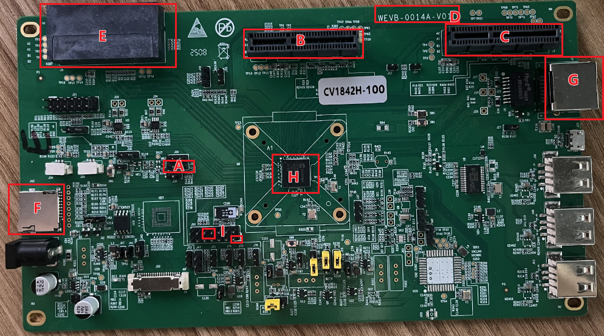
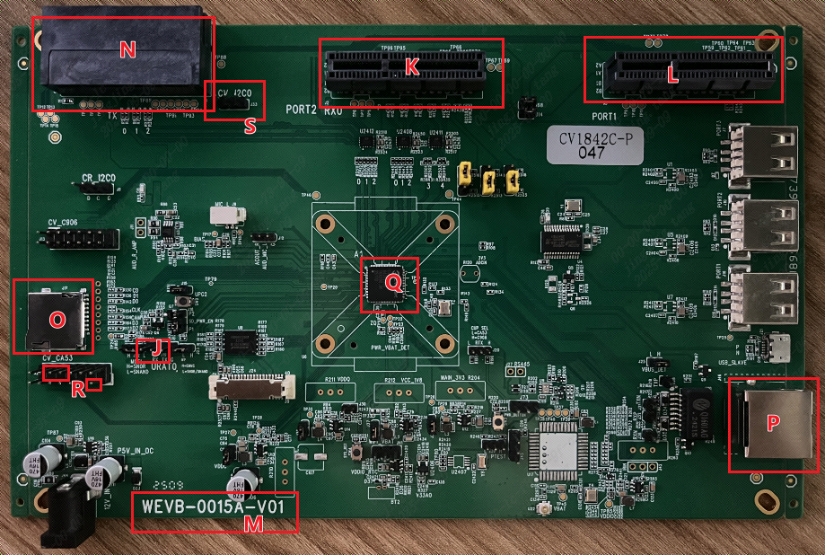

4. EVB接口说明¶
下方图片为CV184x BGA EVB
UART Debug Port
Sensor 0 EVB 插槽
Sensor 1 EVB 插槽
EVB 版号
Panel EVB 插槽
SD 卡插槽
Ethernet 0 连接口
主IC CV184x
UART1 Debug Port

下方图片为CV184x QFN EVB
UART Debug Port
Sensor 0 EVB 插槽
Sensor 1 EVB 插槽
EVB 版号
Panel EVB 插槽
SD 卡插槽
Ethernet 0 连接口
主IC CV184x
UART1 Debug Port (sdk v6.3.0及其之前版本)
UART1 Debug Port (sdk v6.3.1及其之后版本)
